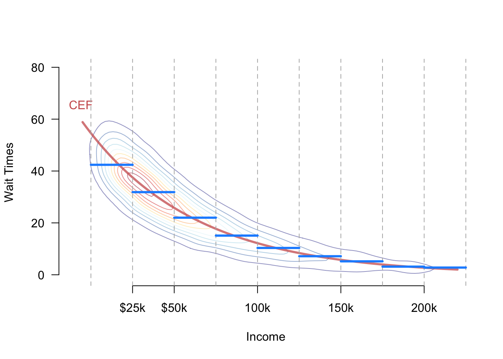
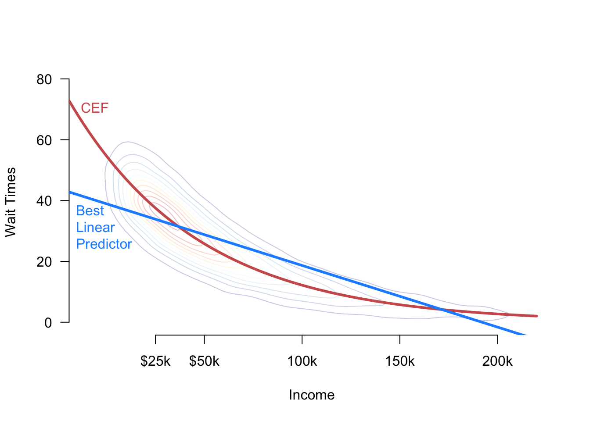

5 Linear regression
Regression is simply a set of tools for evaluating the relationship between an outcome variable, \(Y_i\), and a set of covariates, \(\X_i\). In particular, these tools show how the conditional mean of \(Y_i\) varies as a function of \(\X_i\). For example, we may want to know how wait times at voting precincts vary as a function of various socioeconomic features of the precinct, like income and racial composition. We can accomplish this by estimating the regression function or conditional expectation function (CEF) of the outcome given the covariates, \[ \mu(\bfx) = \E[Y_i \mid \X_i = \bfx]. \] Why are estimation and inference for this regression function special? Why can’t we just use the approaches we have seen for the mean, variance, covariance, and so on? The fundamental problem with the CEF is that there may be many values \(\bfx\) that can occur and many different conditional expectations that we will need to estimate. If any variable in \(\X_i\) is continuous, we must estimate an infinite number of possible values of \(\mu(\bfx)\), and this worsens as we add covariates to \(\X_i\). Because of that, we refer to this problem as the curse of dimensionality. How can we resolve this with our measly finite data?
In this chapter, we will explore two ways of “solving” the curse of dimensionality: (1) assuming it away, and (2) changing the quantity of interest to something easier to estimate.
Regression is so ubiquitous across many scientific fields that it has generated a lot of acquired notational baggage. In particular, the labels of the \(Y_i\) and \(\X_i\) vary greatly:
- The outcome can also be called: the response variable, the dependent variable, the labels (in machine learning), the left-hand side variable, or the regressand
- The covariates are also called: the explanatory variables, the independent variables, the predictors, the right-hand side variables, the regressors, inputs, or features
5.1 Why do we need models?
At first glance, the connection between the CEF and parametric models might be hazy. For example, imagine we are interested in estimating the average wait times at a voting precinct (\(Y_i\)) for Black voters (\(X_i = 1\)) versus non-Black voters (\(X_i=0\)). In that case, there are two parameters to estimate, \[ \mu(1) = \E[Y_i \mid X_i = 1] \quad \text{and}\quad \mu(0) = \E[Y_i \mid X_i = 0], \] which we could estimate by using the plug-in estimators that replace the population averages with their sample counterparts, \[ \widehat{\mu}(1) = \frac{\sum_{i=1}^{n} Y_{i}\mathbb{1}(X_{i} = 1)}{\sum_{i=1}^{n}\mathbb{1}(X_{i} = 1)} \qquad \widehat{\mu}(0) = \frac{\sum_{i=1}^{n} Y_{i}\mathbb{1}(X_{i} = 0)}{\sum_{i=1}^{n}\mathbb{1}(X_{i} = 0)}. \] These are just the sample averages of the wait times for Black and non-Black voters, respectively. And because the race variable here is discrete, we are simply estimating sample means within subpopulations defined by race. The same logic would apply if we had \(k\) racial categories: we would have \(k\) conditional expectations to estimate and \(k\) (conditional) sample means.
Now imagine that we want to know how the average wait time varies as a function of income so that \(X_i\) is (essentially) continuous. (Perhaps the theory here is that wait times may be lower in precincts with more affluent voters.) Now we have a different conditional expectation for every possible dollar amount from 0 to however much the wealthiest earner makes. Suppose we choose one particular income, $42,238, and that we are interested in the conditional expectation \(\mu(42,238)= \E[Y_{i}\mid X_{i} = 42,238]\). We could use the same plug-in estimator as in the discrete case, \[ \widehat{\mu}(42,238) = \frac{\sum_{i=1}^{n} Y_{i}\mathbb{1}(X_{i} = 42,238)}{\sum_{i=1}^{n}\mathbb{1}(X_{i} = 42,238)}. \] This is straightforward, but there is one glaring problem with this estimator: in all likelihood, no units in the particular dataset have that exact income, meaning this estimator is undefined because we would be dividing by zero.
One solution to this problem is to use subclassification to turn the continuous variable into a discrete one and then proceed with the discrete approach above. For example, we could group incomes into $25,000 bins and then calculate the average wait times of anyone between, say, $25,000 and $50,000 income. When we make this estimator switch for practical purposes, we need to connect it back to the DGP of interest. We could assume that the CEF of interest only depends on these binned means, giving us:
\[
\mu(x) =
\begin{cases}
\E[Y_{i} \mid 0 \leq X_{i} < 25,000] &\text{if } 0 \leq x < 25,000 \\
\E[Y_{i} \mid 25,000 \leq X_{i} < 50,000] &\text{if } 25,000 \leq x < 50,000\\
\E[Y_{i} \mid 50,000 \leq X_{i} < 100,000] &\text{if } 50,000 \leq x < 100,000\\
\vdots \\
\E[Y_{i} \mid 200,000 \leq X_{i}] &\text{if } 200,000 \leq x\\
\end{cases}
\] This approach assumes, perhaps incorrectly, that the average wait time does not vary within the bins. Figure 5.1 shows a hypothetical joint distribution between income and wait times with the true CEF, \(\mu(x)\), shown in red. The figure also shows the bins created by subclassification and the implied CEF if we assume bin-constant means in blue. Note that the blue function approximates the true CEF but deviates from it close to the bin edges. The trade-off is that once we make the assumption that wait times do not vary within the bins, we only have to estimate one mean for every bin rather than an infinite number of means for each possible income.
Similarly, we could assume that the CEF follows a simple functional form such as a line: \[ \mu(x) = \E[Y_{i}\mid X_{i} = x] = \beta_{0} + \beta_{1} x. \] This assumption reduces our infinite number of unknowns (the conditional mean at every possible income) to just two unknowns: (1) the slope and (2) the intercept. As we will see, we can use the standard ordinary least squares to estimate these parameters. Note that if the true CEF is nonlinear, this assumption is incorrect, and any estimate based on this assumption might be biased or even inconsistent.
We call the binning and linear assumptions on \(\mu(x)\) functional form assumptions because they restrict the class of functions that \(\mu(x)\) can take. While powerful, these types of assumptions can muddy the roles of defining the quantity of interest and estimation. If our estimator \(\widehat{\mu}(x)\) performs poorly, it will be difficult to tell if this is because the estimator is flawed or our functional form assumptions are incorrect.
To clarify these issues, we will pursue a different approach: understanding what linear regression can estimate under minimal assumptions and then investigating how well this estimand approximates the true CEF.
5.2 Population linear regression
5.2.1 Bivariate linear regression
Let’s set aside the idea of the conditional expectation function and instead focus on finding the linear function of a single covariate \(X_i\) that best predicts the outcome. Recall from your earlier mathematical training that linear functions have the form \(a + bX_i\). The best linear predictor (BLP) or population linear regression of \(Y_i\) on \(X_i\) is defined as \[ m(x) = \beta_0 + \beta_1 x \quad\text{where, }\quad (\beta_{0}, \beta_{1}) = \argmin_{(b_{0}, b_{1}) \in \mathbb{R}^{2}}\; \E[(Y_{i} - b_{0} - b_{1}X_{i} )^{2}]. \] The expression being minimized is the expected prediction error, or the (squared) distance between the observed outcome and the outcome as predicted with a particular slope and intercept. The best linear predictor is the line (that is, slope and intercept values) that results in the lowest expected prediction error. Note that this function is a feature of the joint distribution of the data—the DGP—and so we cannot observe it directly. It must be estimated. The BLP is an alternative to the CEF for summarizing the relationship between the outcome and the covariate, though as we discuss later they will sometimes be equal. We call \((\beta_{0}, \beta_{1})\) the population linear regression coefficients. Note that \(m(x)\) could differ greatly from the CEF \(\mu(x)\) if the latter is nonlinear.
We can solve for the best linear predictor using standard calculus (taking the derivative with respect to each coefficient, setting those equations equal to 0, and solving the system of equations). The first-order conditions, in this case, are \[ \begin{aligned} \frac{\partial \E[(Y_{i} - b_{0} - b_{1}X_{i} )^{2}]}{\partial b_{0}} = \E[-2(Y_{i} - \beta_{0} - \beta_{1}X_{i})] = 0 \\ \frac{\partial \E[(Y_{i} - b_{0} - b_{1}X_{i} )^{2}]}{\partial b_{1}} = \E[-2(Y_{i} - \beta_{0} - \beta_{1}X_{i})X_{i}] = 0 \end{aligned}, \] where we have evaluated the derivatives at the optimum values, \(\beta_0\) and \(\beta_1\), in the first equality of both lines.
Given the linearity of expectations, it is easy to solve for \(\beta_0\) in terms of \(\beta_1\), \[ \beta_{0} = \E[Y_{i}] - \beta_{1}\E[X_{i}]. \] We can plug this into the first-order condition for \(\beta_1\) to get \[ \begin{aligned} 0 &= \E[Y_{i}X_{i}] - (\E[Y_{i}] - \beta_{1}\E[X_{i}])\E[X_{i}] - \beta_{1}\E[X_{i}^{2}] \\ &= \E[Y_{i}X_{i}] - \E[Y_{i}]\E[X_{i}] - \beta_{1}(\E[X_{i}^{2}] - \E[X_{i}]^{2}) \\ &= \cov(X_{i},Y_{i}) - \beta_{1}\V[X_{i}]\\ \beta_{1} &= \frac{\cov(X_{i},Y_{i})}{\V[X_{i}]} \end{aligned} \]
Thus, the slope on the population linear regression of \(Y_i\) on \(X_i\) is equal to the ratio of the covariance of the two variables divided by the variance of \(X_i\). It follows from this that the covariance will determine the sign of the slope: positive covariances will lead to positive \(\beta_1\) and negative covariances will lead to negative \(\beta_1\). In addition, if \(Y_i\) and \(X_i\) are independent, \(\beta_1 = 0\). The slope scales this covariance by the variance of the covariate, so slopes will be lower for more spread-out covariates and higher for less spread-out covariates. If we define the correlation between these variables as \(\rho_{YX}\), then we can relate the coefficient to this quantity as \[ \beta_1 = \rho_{YX}\sqrt{\frac{\V[Y_i]}{\V[X_i]}}. \]
Collecting these various results together, we can write the population linear regression as \[ m(x) = \beta_0 + \beta_1x = \E[Y_i] + \beta_1(x - \E[X_i]), \] which shows how we adjust our best guess about \(Y_i\) from the mean of the outcome using the covariate.
Be sure to remember that the BLP, \(m(x)\), and the CEF, \(\mu(x)\), are distinct entities. If the CEF is nonlinear, as in Figure 5.2, there will be a difference between these functions, meaning that the BLP might produce subpar predictions. We will derive a formal connection between the BLP and the CEF below.

5.2.2 Beyond linear approximations
The linear part of the “best linear predictor” is less restrictive than it appears at first glance. We can easily modify the minimum MSE problem to find the best quadratic, cubic, or general polynomial function of \(X_i\) that predicts \(Y_i\). For example, the quadratic function of \(X_i\) that best predicts \(Y_i\) would be \[ m(X_i, X_i^2) = \beta_0 + \beta_1X_i + \beta_2X_i^2 \quad\text{where}\quad \argmin_{(b_0,b_1,b_2) \in \mathbb{R}^3}\;\E[(Y_{i} - b_{0} - b_{1}X_{i} - b_{2}X_{i}^{2})^{2}]. \] While the equation is now a quadratic function of the covariates, it is still a linear function of the unknown parameters \((\beta_{0}, \beta_{1}, \beta_{2})\), so we still call this a best linear predictor.
We could include higher-order terms of \(X_i\) in the same manner, and, including more polynomial terms, \(X_i^p\), will allow the BLP to be a more flexible function of \(X_i\). When we estimate the BLP, however, we usually pay for this flexibility with overfitting and high variance in our estimates.
5.2.3 Linear prediction with multiple covariates
We now generalize the idea of a best linear predictor to a setting with an arbitrary number of covariates, which more flexibly captures real-life empirical research scenarios. In this setting, recall that the linear function will be
\[ \bfx'\bfbeta = x_{1}\beta_{1} + x_{2}\beta_{2} + \cdots + x_{k}\beta_{k}. \] We will define the best linear predictor (BLP) to be \[ m(\bfx) = \bfx'\bfbeta, \quad \text{where}\quad \bfbeta = \argmin_{\mb{b} \in \real^k}\; \E\bigl[ \bigl(Y_{i} - \mb{X}_{i}'\mb{b} \bigr)^2\bigr] \]
This BLP solves the same fundamental optimization problem as in the bivariate case: it chooses the set of coefficients that minimizes the expected mean-squared error, where the expectation is over the joint distribution of the data.
NoteBest linear projection assumptions
Without some assumptions on the joint distribution of the data, the following “regularity conditions” will ensure the existence of the BLP:
- \(\E[Y^2] < \infty\) (outcome has finite mean/variance)
- \(\E\Vert \mb{X} \Vert^2 < \infty\) (\(\mb{X}\) has finite means/variances/covariances)
- \(\mb{Q}_{\mb{XX}} = \E[\mb{XX}']\) is positive definite (columns of \(\X\) are linearly independent)
Under these assumptions, it is possible to derive a closed-form expression for the population coefficients \(\bfbeta\) using matrix calculus. To set up the optimization problem, we find the first-order condition by taking the derivative of the expectation of the squared errors. First, take the derivative of the squared prediction errors using the chain rule: \[ \begin{aligned} \frac{\partial}{\partial \mb{b}}\left(Y_{i} - \X_{i}'\mb{b}\right)^{2} &= 2\left(Y_{i} - \X_{i}'\mb{b}\right)\frac{\partial}{\partial \mb{b}}(Y_{i} - \X_{i}'\mb{b}) \\ &= -2\left(Y_{i} - \X_{i}'\mb{b}\right)\X_{i} \\ &= -2\X_{i}\left(Y_{i} - \X_{i}'\mb{b}\right) \\ &= -2\left(\X_{i}Y_{i} - \X_{i}\X_{i}'\mb{b}\right), \end{aligned} \] where the third equality comes from the fact that \((Y_{i} - \X_{i}'\bfbeta)\) is a scalar. We can plug this into the expectation to get the first-order condition and solve for \(\bfbeta\), \[ \begin{aligned} 0 &= -2\E[\X_{i}Y_{i} - \X_{i}\X_{i}'\bfbeta ] \\ \E[\X_{i}\X_{i}'] \bfbeta &= \E[\X_{i}Y_{i}], \end{aligned} \] which implies the population coefficients are \[ \bfbeta = \left(\E[\X_{i}\X_{i}']\right)^{-1}\E[\X_{i}Y_{i}] = \mb{Q}_{\mb{XX}}^{-1}\mb{Q}_{\mb{X}Y} \] This gives us an expression for the coefficients for the population best linear predictor in terms of the joint distribution \((Y_{i}, \X_{i})\).
A couple of facts might be useful for interpreting this expression substantively. Recall that \(\mb{Q}_{\mb{XX}} = \E[\X_{i}\X_{i}']\) is a \(k\times k\) matrix and \(\mb{Q}_{\X Y} = \E[\X_{i}Y_{i}]\) is a \(k\times 1\) column vector, which implies that \(\bfbeta\) is also a \(k \times 1\) column vector.
Note
What does the expression for the population regression coefficients mean? It is helpful to separate the intercept or constant term so that we have \[ Y_{i} = \beta_{0} + \X'\bfbeta + e_{i}, \] so \(\bfbeta\) refers to just the vector of coefficients for the covariates. In this case, we can write the coefficients in a more interpretable way: \[ \bfbeta = \V[\X]^{-1}\cov(\X, Y), \qquad \beta_0 = \mu_Y - \mb{\mu}'_{\mb{X}}\bfbeta \]
Thus, the population coefficients take the covariance between the outcome and the covariates and “divide” it by information about variances and covariances of the covariates. The intercept recenters the regression so that projection errors are mean zero. This means that these coefficients generalize the bivariate formula to this multiple covariate context.
With an expression for the population linear regression coefficients, we can write the linear projection as \[ m(\X_{i}) = \X_{i}'\left(\E[\X_{i}\X_{i}']\right)^{-1}\E[\X_{i}Y_{i}] = \X_{i}'\mb{Q}_{\mb{XX}}^{-1}\mb{Q}_{\mb{X}Y} \]
5.2.4 Projection error
The projection error or is the difference between the actual value of \(Y_i\) and the projection, \[ e_{i} = Y_{i} - m(\X_{i}) = Y_i - \X_{i}'\bfbeta, \] where we have made no assumptions about this error yet. The projection error is simply the prediction error of the best linear prediction for a particular unit in the data. Rewriting this definition, we can see that we can always write the outcome as the linear projection plus the projection error, \[ Y_{i} = \X_{i}'\bfbeta + e_{i}. \] Notice that this looks suspiciously similar to a linearity assumption on the CEF, but we haven’t made any assumptions here. Instead, we just used the definition of the projection error to write a tautological statement: \[ Y_{i} = \X_{i}'\bfbeta + e_{i} = \X_{i}'\bfbeta + Y_{i} - \X_{i}'\bfbeta = Y_{i}. \] The critical difference between this representation and the usual linear model assumption is what properties \(e_{i}\) possesses.
A key property of the projection errors is that when the covariate vector includes an “intercept” or constant term, the projection errors are uncorrelated with the covariates. To see this, first note that \(\E[\X_{i}e_{i}] = 0\) since \[ \begin{aligned} \E[\X_{i}e_{i}] &= \E[\X_{{i}}(Y_{i} - \X_{i}'\bfbeta)] \\ &= \E[\X_{i}Y_{i}] - \E[\X_{i}\X_{i}']\bfbeta \\ &= \E[\X_{i}Y_{i}] - \E[\X_{i}\X_{i}']\left(\E[\X_{i}\X_{i}']\right)^{-1}\E[\X_{i}Y_{i}] \\ &= \E[\X_{i}Y_{i}] - \E[\X_{i}Y_{i}] = 0 \end{aligned} \] Thus, for every \(X_{ij}\) in \(\X_{i}\), we have \(\E[X_{ij}e_{i}] = 0\). If one of the entries in \(\X_i\) is a constant 1, then this also implies that \(\E[e_{i}] = 0\). Together, these facts imply that the projection error is uncorrelated with each \(X_{ij}\), since \[ \cov(X_{ij}, e_{i}) = \E[X_{ij}e_{i}] - \E[X_{ij}]\E[e_{i}] = 0 - 0 = 0 \] Note that we still have made no assumptions about these projection errors except for some mild regularity conditions on the joint distribution of the outcome and covariates. Thus, in very general settings, we can write the linear projection model \(Y_i = \X_i'\bfbeta + e_i\) where \(\bfbeta = \left(\E[\X_{i}\X_{i}']\right)^{-1}\E[\X_{i}Y_{i}]\) and conclude that \(\E[\X_{i}e_{i}] = 0\) by definition, not by assumption.
The projection error is uncorrelated with the covariates, so does this mean that the CEF is linear? Unfortunately, no. Recall that while independence implies this lack of correlation, the reverse does not hold. So when we look at the CEF, we have \[ \E[Y_{i} \mid \X_{i}] = \X_{i}'\bfbeta + \E[e_{i} \mid \X_{i}], \] and the last term \(\E[e_{i} \mid \X_{i}]\) would only be 0 if the errors were independent of the covariates, so \(\E[e_{i} \mid \X_{i}] = \E[e_{i}] = 0\). But nowhere in the linear projection model did we assume this. So while we can (almost) always write the outcome as \(Y_i = \X_i'\bfbeta + e_i\) and have those projection errors be uncorrelated with the covariates, it will require additional assumptions to ensure that the true CEF is, in fact, linear \(\E[Y_{i} \mid \X_{i}] = \X_{i}'\bfbeta\).
To step back for a moment, what have we shown here? In a nutshell, we showed that a population linear regression exists under very general conditions and that we can write the coefficients of that population linear regression as a function of expectations of the joint distribution of the data. We did not, however, assume that the CEF was linear nor that the projection errors were normally distributed.
Why is this important? The ordinary least squares estimator, the workhorse regression estimator of the social sciences, targets this quantity of interest in large samples, regardless of whether the true CEF is linear or not. Thus, even when a linear CEF assumption is incorrect and the projection errors are not normally distributed, OLS still targets a perfectly valid quantity of interest: the coefficients from this population linear projection.
5.3 Linear CEFs without assumptions
What is the relationship between the best linear predictor (which we just saw generally exists) and the CEF? To draw the connection, remember that the conditional expectation is importantly the function of \(\X_i\) that best predicts \(Y_{i}\). The population regression was the best linear predictor, but the CEF is the best predictor among all nicely behaved functions of \(\X_{i}\), linear or nonlinear. In particular, if we label \(L_2\) to be the set of all functions of the covariates \(g()\) that have finite squared expectation, \(\E[g(\X_{i})^{2}] < \infty\), then we can show that the CEF has the lowest squared prediction error in this class of functions: \[ \mu(\X) = \E[Y_{i} \mid \X_{i}] = \argmin_{g(\X_i) \in L_2}\; \E\left[(Y_{i} - g(\X_{i}))^{2}\right], \]
So we have established that the CEF is the best predictor and the population linear regression \(m(\X_{i})\) is the best linear predictor. These two facts allow us to connect the CEF to the population regression.
Theorem 5.1 If \(\mu(\X_{i})\) is a linear function of \(\X_i\), then \(\mu(\X_{i}) = m(\X_{i}) = \X_i'\bfbeta\).
This theorem says that if the true CEF is linear, it must equal the population linear regression. The proof of this is straightforward: the CEF is the best predictor, so if it is linear, it must also be the best linear predictor.
In general, we are in the business of learning about the CEF, so we are unlikely to know if it genuinely is linear or not. In some situations, however, we can show that the CEF is linear without any additional assumptions. These are situations where the covariates take on a finite number of possible values. Going back to the example from the chapter introduction, suppose we are interested in the CEF of wait times at voting precincts for Black (\(X_i = 1\)) vs. non-Black (\(X_i = 0\)) voters. In this case, there are two possible values of the CEF, \(\mu(1) = \E[Y_{i}\mid X_{i}= 1]\), the average wait time for Black voters, and \(\mu(0) = \E[Y_{i}\mid X_{i} = 0]\), the average wait time for non-Black voters. Notice that we can write the CEF as \[ \mu(x) = x \mu(1) + (1 - x) \mu(0) = \mu(0) + x\left(\mu(1) - \mu(0)\right)= \beta_0 + x\beta_1, \] which is clearly a linear function of \(x\). Based on this derivation, we obtain coefficients of this linear CEF that have clear substantive interpretations:
- \(\beta_0 = \mu(0)\): the expected wait time for a Black voter.
- \(\beta_1 = \mu(1) - \mu(0)\): the difference in average wait times between Black and non-Black voters. How \(X_{i}\) is defined here is important since the intercept will always be the average outcome when \(X_i = 0\), and the slope will always be the difference in means between the \(X_i = 1\) group and the \(X_i = 0\) group.
What about a categorical covariate with more than two levels? For example, we may be interested in wait times by party identification, where \(X_i = 1\) indicates Democratic voters, \(X_i = 2\) indicates Republican voters, and \(X_i = 3\) indicates Independent voters. We could write the CEF of wait times as a linear function of this variable, but that would assume that the difference between Democrats and Republicans is exactly the same as for Independents and Republicans – which is probably false. With more than two levels, we can represent a categorical variable as a vector of binary variables, \(\X_i = (X_{i1}, X_{i2})\), where \[ \begin{aligned} X_{{i1}} &= \begin{cases} 1&\text{if Republican} \\ 0 & \text{if not Republican} \end{cases} \\ X_{{i2}} &= \begin{cases} 1&\text{if independent} \\ 0 & \text{if not independent} \end{cases} \\ \end{aligned} \] These two indicator variables encode the same information as the original single three-level variable, \(X_{i}\), so if we know the values of \(X_{i1}\) and \(X_{i2}\), then we know exactly to which party \(i\) belongs. Thus, the CEFs for \(X_i\) and the pair of indicator variables, \(\X_i\), are precisely the same, but the latter allows for a lovely linear representation, \[ \E[Y_i \mid X_{i1}, X_{i2}] = \beta_0 + \beta_1 X_{i1} + \beta_2 X_{i2}, \] where
- \(\beta_0 = \E[Y_{i} \mid X_{i1} = 0, X_{i2} = 0]\) is the average wait time for the group who does not get an indicator variable (Democrats in this case). This group is sometimes called the baseline group or the omitted group.
- \(\beta_1 = \E[Y_{i} \mid X_{i1} = 1, X_{i2} = 0] - \E[Y_{i} \mid X_{i1} = 0, X_{i2} = 0]\) is the difference in means between Republican voters and Democratic voters, or the difference between the first indicator group and the baseline group.
- \(\beta_2 = \E[Y_{i} \mid X_{i1} = 0, X_{i2} = 1] - \E[Y_{i} \mid X_{i1} = 0, X_{i2} = 0]\) is the difference in means between independent voters and Democratic voters, or the difference between the second indicator group and the baseline group.
This approach easily generalizes to categorical variables with an arbitrary number of levels.
What have we shown? The CEF is linear without additional assumptions when there is a categorical covariate. We can show that this continues to hold even when we have multiple categorical variables. We now have two binary covariates: \(X_{i1}=1\) indicating a Black voter, and \(X_{i2} = 1\) indicating a retired voter versus a working-age voter. These two binary variables give us four possible values of the CEF: \[ \mu(x_1, x_2) = \begin{cases} \mu_{00} & \text{if } x_1 = 0 \text{ and } x_2 = 0 \text{ (non-Black, working age)} \\ \mu_{10} & \text{if } x_1 = 1 \text{ and } x_2 = 0 \text{ (Black, working age)} \\ \mu_{01} & \text{if } x_1 = 0 \text{ and } x_2 = 1 \text{ (non-Black, retired)} \\ \mu_{11} & \text{if } x_1 = 1 \text{ and } x_2 = 1 \text{ (Black, retired)} \end{cases} \] We can write this as \[ \mu(x_{1}, x_{2}) = (1 - x_{1})(1 - x_{2})\mu_{00} + x_{1}(1 -x_{2})\mu_{10} + (1-x_{1})x_{2}\mu_{01} + x_{1}x_{2}\mu_{11}, \] which we can rewrite as \[ \mu(x_1, x_2) = \beta_0 + x_1\beta_1 + x_2\beta_2 + x_1x_2\beta_3, \] where the substantive interpretations are
- \(\beta_0 = \mu_{00}\): average wait times for working-age non-Black voters.
- \(\beta_1 = \mu_{10} - \mu_{00}\): difference in means for working-age Black vs. working-age non-Black voters.
- \(\beta_2 = \mu_{01} - \mu_{00}\): difference in means for retired non-Black vs. working-age non-Black voters.
- \(\beta_3 = (\mu_{11} - \mu_{01}) - (\mu_{10} - \mu_{00})\): difference in retired racial difference vs working-age racial difference.
Thus, we can write the CEF with two binary covariates as linear when the linear specification includes a multiplicative interaction between them (\(x_1x_2\)). This result holds for all pairs of binary covariates, and we can generalize the interpretation of the coefficients in the CEF as
- \(\beta_0 = \mu_{00}\): average outcome when both variables are 0.
- \(\beta_1 = \mu_{10} - \mu_{00}\): difference in average outcomes for the first covariate when the second covariate is 0.
- \(\beta_2 = \mu_{01} - \mu_{00}\): difference in average outcomes for the second covariate when the first covariate is 0.
- \(\beta_3 = (\mu_{11} - \mu_{01}) - (\mu_{10} - \mu_{00})\): change in the “effect” of the first (second) covariate when the second (first) covariate goes from 0 to 1.
This result also generalizes to an arbitrary number of binary covariates. If we have \(p\) binary covariates, then the CEF will be linear with all two-way interactions, \(x_1x_2\), all three-way interactions, \(x_1x_2x_3\), up to the \(p\)-way interaction \(x_1\times\cdots\times x_p\). Furthermore, we can generalize to arbitrary numbers of categorical variables by expanding each into a series of binary variables and then including all interactions between the resulting binary variables.
We have established that when we have a set of categorical covariates, the true CEF will be linear, and we have seen the various ways to represent that CEF. Note that when we use, for example, ordinary least squares, we are free to choose how to include our variables. We could run a regression of \(Y_i\) on \(X_{i1}\) and \(X_{i2}\) without an interaction term, but this model will only be correct if \(\beta_3\) is equal to 0, and so the interaction term is irrelevant. We call a model saturated if there are as many coefficients as the CEF’s unique values. A saturated model can, by its nature, always be written as a linear function without assumptions. The above examples show how to construct saturated models in various situations.
5.4 Interpretation of the regression coefficients
We have seen how to interpret population regression coefficients when the CEF is linear without assumptions. How do we interpret the population coefficients \(\bfbeta\) in other settings?
Consider the simplest case, one in which every entry in \(\X_{i}\) represents a different covariate and no covariate is any function of another (we will see why this caveat is necessary below). In this simple case, the \(k\)th coefficient, \(\beta_{k}\), represents the change in the predicted outcome for a one-unit change in the \(k\)th covariate \(X_{ik}\), holding all other covariates fixed. We can see this from \[ \begin{aligned} m(x_{1} + 1, x_{2}) & = \beta_{0} + \beta_{1}(x_{1} + 1) + \beta_{2}x_{2} \\ m(x_{1}, x_{2}) &= \beta_{0} + \beta_{1}x_{1} + \beta_{2}x_{2}, \end{aligned} \] so that the change in the predicted outcome for increasing \(X_{i1}\) by one unit is \[ m(x_{1} + 1, x_{2}) - m(x_{1}, x_{2}) = \beta_1 \] Notice that nothing changes in this interpretation when adding more covariates to the vector, \[ m(x_{1} + 1, \bfx_{2}) - m(x_{1}, \bfx_{2}) = \beta_1, \] The coefficient on a particular variable is the change in the predicted outcome corresponding to a one-unit change in the covariate holding all other covariates constant. Each coefficient summarizes the “all else equal” difference in the predicted outcome for each covariate.
5.4.1 Polynomial functions of the covariates
The interpretation of the population regression coefficients becomes more complicated when including nonlinear functions of the covariates. In that case, multiple coefficients control how a change in a covariate will change the predicted value of \(Y_i\). For example, suppose we have a quadratic function of \(X_{i1}\), \[ m(x_1, x_1^2, x_{2}) = \beta_{0} + \beta_{1}x_{1} + \beta_{2}x_{1}^{2} + \beta_{3}x_{2}, \] and try to look at a one-unit change in \(x_1\), \[ \begin{aligned} m(x_{1} + 1, (x_{1} + 1)^{2}, x_{2}) & = \beta_{0} + \beta_{1}(x_{1} + 1) + \beta_{2}(x_{1} + 1)^{2}+ \beta_{3}x_{2} \\ m(x_{1}, x_{1}^{2}, x_{2}) &= \beta_{0} + \beta_{1}x_{1} + \beta_{2}x_{1}^{2} + \beta_{3}x_{2}, \end{aligned} \] resulting in \(\beta_1 + \beta_2(2x_{1} + 1)\). This formula might be an interesting quantity, but we more commonly use the derivative of \(m(\bfx)\) with respect to \(x_1\) as a measure of the marginal effect of \(X_{i1}\) on the predicted value of \(Y_i\) (holding all other variables constant), where “marginal” here means the change in prediction for a very small change in \(X_{i1}\).1 In the case of the quadratic covariate, we have \[ \frac{\partial m(x_{1}, x_{1}^{2}, x_{2})}{\partial x_{1}} = \beta_{1} + 2\beta_{2}x_{1}, \] so the marginal effect on prediction varies as a function of \(x_1\). From this, we see that the individual interpretations of the coefficients are less interesting: \(\beta_1\) is the marginal effect when \(X_{i1} = 0\) and \(\beta_2 / 2\) describes how a one-unit change in \(X_{i1}\) changes the marginal effect. As is hopefully clear, it will often be more straightforward to visualize the nonlinear predictor function (perhaps using the orthogonalization techniques in Section 5.5).
5.4.2 Interactions
Another common nonlinear function occurs when including interaction terms or covariates that are products of two other covariates, \[ m(x_{1}, x_{2}, x_{1}x_{2}) = \beta_{0} + \beta_{1}x_{1} + \beta_{2}x_{2} + \beta_{3}x_{1}x_{2}. \] In these situations, we can use the derivative of the BLP to measure the marginal effect of one variable or the other on the predicted value of \(Y_i\). In particular, we have \[ \begin{aligned} \frac{\partial m(x_{1}, x_{2}, x_{1}x_{2})}{\partial x_1} &= \beta_1 + \beta_3x_2, \\ \frac{\partial m(x_{1}, x_{2}, x_{1}x_{2})}{\partial x_2} &= \beta_2 + \beta_3x_1. \end{aligned} \] Here, the coefficients are slightly more interpretable:
- \(\beta_1\): the marginal effect of \(X_{i1}\) on predicted \(Y_i\) when \(X_{i2} = 0\).
- \(\beta_2\): the marginal effect of \(X_{i2}\) on predicted \(Y_i\) when \(X_{i1} = 0\).
- \(\beta_3\): the change in the marginal effect of \(X_{i1}\) due to a one-unit change in \(X_{i2}\) OR the change in the marginal effect of \(X_{i2}\) due to a one-unit change in \(X_{i1}\).
If we add more covariates to this BLP, these interpretations change to “holding all other covariates constant.”
Interactions are a standard part of social science research because they allow us to assess how the relationship between the outcome and an independent variable varies by the values of another variable. In the context of our study of wait times at a voting precinct, if \(X_{i1}\) is income and \(X_{i2}\) is the Black/non-Black voter indicator, then \(\beta_3\) represents the change in the slope of the wait time-income relationship between Black and non-Black voters.
NoteCentering variables to improve interpretability
In many cases, the so-called marginal coefficients on the lower-order terms (\(\beta_1\) for \(X_{i1}\) and \(\beta_2\) for \(X_{i2}\)) are uninteresting because they represent the marginal effect of one variable when the other is 0. If \(X_{i1}\) is age and \(X_{i2}\) is the Black/non-Black indicator, then \(\beta_2\) is the estimated difference in average voter wait times for voters who are zero years old, an obviously nonsensical parameter. We can improve the interpretability of the coefficient by recentering the age variable. Suppose we include a mean-centered version of age, \[ \widetilde{X}_{i1} = X_{i1} - \overline{X}_1 \] in place of \(X_{i1}\). That is, we regress \(Y_i\) on \(\widetilde{X}_{i1}\), \(X_{i2}\), and \(\widetilde{X}_{i1}X_{i2}\). In this case, \(\beta_2\) (the coefficient on the race indicator \(X_{i2}\)) is the marginal effect of \(X_{i2}\) when \(\widetilde{X}_{i1} = 0\) or when \(X_{i1} = \overline{X}_1\). Thus, this coefficient is now the estimated difference in average voter wait times for the average-aged voter, which is far more interpretable. This recentering has no effect on either \(\beta_1\) or \(\beta_3\), which is rather remarkable.
5.5 Multiple regression from bivariate regression
With a regression of an outcome on two covariates, understanding how the coefficients of one variable relate to the other is helpful. Consider the following best linear projection: \[ (\alpha, \beta, \gamma) = \argmin_{(a,b,c) \in \mathbb{R}^{3}} \; \E[(Y_{i} - (a + bX_{i} + cZ_{i}))^{2}] \tag{5.1}\] Can we understand the \(\beta\) coefficient here in terms of a bivariate regression? As it turns out, yes. From the above results, we know that the intercept has a simple form: \[ \alpha = \E[Y_i] - \beta\E[X_i] - \gamma\E[Z_i]. \] Let’s investigate the first order condition for \(\beta\): \[ \begin{aligned} 0 &= \E[Y_{i}X_{i}] - \alpha\E[X_{i}] - \beta\E[X_{i}^{2}] - \gamma\E[X_{i}Z_{i}] \\ &= \E[Y_{i}X_{i}] - \E[Y_{i}]\E[X_{i}] + \beta\E[X_{i}]^{2} + \gamma\E[X_{i}]\E[Z_{i}] - \beta\E[X_{i}^{2}] - \gamma\E[X_{i}Z_{i}] \\ &= \cov(Y, X) - \beta\V[X_{i}] - \gamma \cov(X_{i}, Z_{i}) \end{aligned} \] We can see from this that if \(\cov(X_{i}, Z_{i}) = 0\), then the coefficient on \(X_i\) will be the same as in the simple regression case, \(\cov(Y_{i}, X_{i})/\V[X_{i}]\). When \(X_i\) and \(Z_i\) are uncorrelated, we sometimes call them orthogonal.
To write a simple formula for \(\beta\) when the covariates are not orthogonal, we orthogonalize \(X_i\) by obtaining the prediction errors from a population linear regression of \(X_i\) on \(Z_i\): \[ \widetilde{X}_{i} = X_{i} - (\delta_{0} + \delta_{1}Z_{i}) \quad\text{where}\quad (\delta_{0}, \delta_{1}) = \argmin_{(d_{0},d_{1}) \in \mathbb{R}^{2}} \; \E[(X_{i} - (d_{0} + d_{1}Z_{i}))^{2}] \] Given the properties of projection errors, we know that this orthogonalized version of \(X_{i}\) will be uncorrelated with \(Z_{i}\) since \(\E[\widetilde{X}_{i}Z_{i}] = 0\). Remarkably, the coefficient on \(X_i\) from the “long” BLP in Equation 5.1 is the same as the regression of \(Y_i\) on this orthogonalized \(\widetilde{X}_i\), \[ \beta = \frac{\cov(Y_{i}, \widetilde{X}_{i})}{\V[\widetilde{X}_{i}]} \]
We can expand this idea to when there are several other covariates. Suppose now that we are interested in a regression of \(Y_i\) on \(\X_i\) and we are interested in the coefficient on the \(k\)th covariate. Let \(\X_{i,-k}\) be the vector of covariates omitting the \(k\)th entry and let \(m_k(\X_{i,-k})\) represent the BLP of \(X_{ik}\) on these other covariates. We can define \(\widetilde{X}_{ik} = X_{ik} - m_{k}(\X_{i,-k})\) as the \(k\)th variable orthogonalized with respect to the rest of the variables and we can write the coefficient on \(X_{ik}\) as \[ \beta_k = \frac{\cov(Y_i, \widetilde{X}_{ik})}{\V[\widetilde{X}_{ik}]}. \] Thus, the population regression coefficient in the BLP is the same as from a bivariate regression of the outcome on the projection error for \(X_{ik}\) projected on all other covariates. One interpretation of coefficients in a population multiple regression is that they represent the relationship between the outcome and the covariate after removing the linear relationships of all other variables.
5.6 Omitted variable bias
In many situations, we may need to choose whether to include a variable in a regression, so it can be helpful to understand how this choice might affect the population coefficients on the other variables in the regression. Suppose we have a variable \(Z_i\) that we may add to our regression, which currently has \(\X_i\) as the covariates. We can write this new projection as \[ m(\X_i, Z_i) = \X_i'\bfbeta + Z_i\gamma, \qquad m(\X_{i}) = \X_i'\bs{\delta}, \] where we often refer to \(m(\X_i, Z_i)\) as the long regression and \(m(\X_i)\) as the short regression.
From the definition of the BLP, we can write the short coefficients as \[ \bs{\delta} = \left(\E[\X_{i}\X_{i}']\right)^{-1} \E[\X_{i}Y_{i}]. \] Letting \(e_i = Y_i - m(\X_{i}, Z_{i})\) be the projection errors from the long regression, we can write this as \[ \begin{aligned} \bs{\delta} &= \left(\E[\X_{i}\X_{i}']\right)^{-1} \E[\X_{i}(\X_{i}'\bfbeta + Z_{i}\gamma + e_{i})] \\ &= \left(\E[\X_{i}\X_{i}']\right)^{-1}(\E[\X_{i}\X_{i}']\bfbeta + \E[\X_{i}Z_{i}]\gamma + \E[\X_{i}e_{i}]) \\ &= \bfbeta + \left(\E[\X_{i}\X_{i}']\right)^{-1}\E[\X_{i}Z_{i}]\gamma \end{aligned} \] Note that the vector in the second term is the vector of linear projection coefficients of a population linear regression of \(Z_i\) on the \(\X_i\). If we call these coefficients \(\bs{\pi}\), then the short coefficients are \[ \bs{\delta} = \bfbeta + \bs{\pi}\gamma. \]
We can rewrite this to show that the difference between the coefficients in these two projections is \(\bs{\delta} - \bfbeta= \bs{\pi}\gamma\) or the product of the coefficient on the “excluded” \(Z_i\) and the coefficient of the included \(\X_i\) on the excluded. Most textbooks refer to this difference as the omitted variable bias of omitting \(Z_i\) under the idea that \(\bfbeta\) is the true target of inference. But the result is much broader than this since it tells us how to relate the coefficients of two nested projections.
The last two results (multiple regressions from bivariate and omitted variable bias) are sometimes presented as results for the ordinary least squares estimator that we will show in the next chapter. We introduce them here as features of a particular population quantity, the linear projection or population linear regression.
5.7 Drawbacks of the BLP
The best linear predictor is, of course, a linear approximation to the CEF, and this approximation could be quite poor if the true CEF is highly nonlinear. A more subtle issue with the BLP is that it is sensitive to the marginal distribution of the covariates when the CEF is nonlinear. Let’s return to our example of wait times at voting precincts and income. In Figure 5.3, we show the true CEF and the BLP when we restrict income below $50,000 or above $100,000. The BLP can vary quite dramatically here. This figure is an extreme example, but the essential point still holds as the marginal distribution of \(X_i\) changes.

5.8 Summary
As we discussed in this chapter, with even a moderate number of covariates, conditional expectation functions (also known as regressions) become very difficult to estimate because of the high dimensionality involved. To avoid this problem, we can focus on a different quantity, the best linear predictor which is the linear function of the covariates that best predicts the outcome in mean-squared error. The BLP exists under very mild conditions and has very interpretable parameters. Another strategy is to impose a linearity assumption on the conditional expectation function to make it more estimable, in which case, the BLP and the CEF are the same function. With a small number of discrete covariates it is possible to saturate a model so that linearity holds mechanically. Coefficients on population linear regressions with multiple independent variables can always be written in terms of a regression of the outcome on one variable orthogonalized relative to the rest of the independent variables. The omitted variable bias formula shows how leaving a variable out of the best linear affects the coefficients on other independent variables. In the next chapter, we will turn to using data to estimate the coefficients for these population linear regressions.
Note the choice of language here. The marginal effect is on the predicted value of \(Y_i\), not on \(Y_i\) itself. So these marginal effects are associational, not necessarily causal quantities.↩︎